Key Topic 2: Protest, progress and radicalism, 1960–75
Paper 3: Conflict at Home and Abroad: the USA, 1954–75
Course Textbook
Contents
|
Lesson 1: KT 2.1: How did peaceful protests (like sit-ins and Freedom Rides) force the government to act?
|
|
|
Lesson 2: KT 2.2: How did protests in Birmingham and Selma lead to the Civil and Voting Rights Acts?
|
|
|
Lesson 3: KT 2.3: What was the Black Power movement, and how did it differ from non-violent protests?
|
|
|
Lesson 4: KT 2.4: Why did riots break out in American cities between 1965 and 1968?
|
|
L1: KT 2.1: How did peaceful protests (like sit-ins and Freedom Rides) force the government to act?[[SRC_MARKER:L4_Start]]
Learning Objectives
Demonstrate comprehensive historical knowledge of the key developments and figures in KT 2.1: How did peaceful protests (like sit-ins and Freedom Rides) force the government to act?.
Analyse conflicting motivations, tactics, and responses of groups and individuals involved in the crisis.
Evaluate competing historical interpretations and source evidence to construct reasoned causal judgments for Paper 3.
Recall & Retrieval
1. What was the difference between White Citizens' Councils and the Ku Klux Klan?
2. Why did Carolyn Bryant's accusations lead to the murder of Emmett Till?
3. Why was Emmett Till's open-casket funeral significant for the civil rights movement?
4. Which laws enforced racial segregation and discrimination in the Southern states in the 1950s?
5. What does the abbreviation NAACP stand for?
Vocabulary Check
The Odd One Out: Circle ONE term that does not belong with the others. Explain your reasoning: What historical connection links the other terms, and why is your chosen term different?
Greensboro | James Meredith | 1960 | James Meredith | Student Nonviolent Coordinating Committee
Teacher Model / Pupil Reasoning: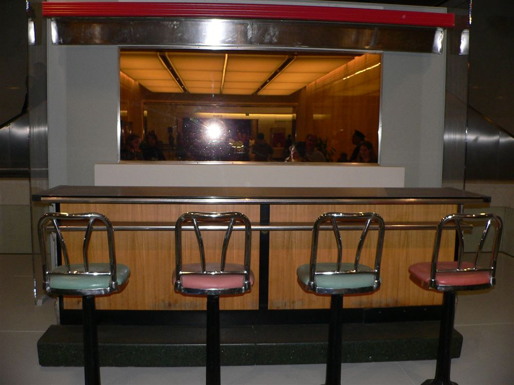
Black college students stage a non-violent sit-in at the segregated Woolworth's lunch counter in Greensboro, North Carolina, February 1960.
On 1 February 1960, four Black college students staged a daring direct action sit-in at a 'whites-only' Woolworth's lunch counter in Greensboro, North Carolina:
- The Greensboro Four: Ezell Blair Jr., Franklin McCain, Joseph McNeil, and David Richmond sat at the counter. When they were refused service, they remained seated peacefully until the shop closed.
- Rapid Growth & Boycotts: The next day, 27 more students joined them. The numbers grew rapidly, and by the fifth day, 300 students were taking part. They organised a massive economic boycott of local shops with segregated lunch counters, causing sales to drop drastically.
- Non-violent Discipline: Protesters faced violence and were pelted with food and drinks by white youths, but they strictly maintained non-violent discipline.
- Greensboro Success & Spread: The economic pressure worked, and Greensboro's lunch counters were successfully desegregated. The simple, effective tactic attracted huge media attention and quickly spread to other states, eventually involving over 70,000 people.
- SNCC & Ella Baker: The success highlighted the power of student-led protests, leading to the creation of the Student Nonviolent Coordinating Committee (SNCC) in April 1960 (guided by veteran organizer Ella Baker) to coordinate further direct action.
>
🎓 Scholarly Perspective: The Economic Leverage of Sit-ins: The Greensboro sit-ins succeeded because they directly targeted the profits of national retail chains. Woolworth's lost over $200,000 in sales (equivalent to nearly $2 million today) due to the protests and secondary boycotts by sympathizers in the North. This demonstrated that hitting segregationist businesses in their pockets was far more effective than moral persuasion alone.
> 🎙️
Eyewitness Testimony — Franklin McCain: “The waitress told us, 'We don't serve you here.' We said, 'We'd like to be served.' I had this feeling of absolute liberation. I felt like I had finally stood up and claimed my manhood. I had been afraid before, but sitting on that stool, I felt ten feet tall. A white police officer came in, paced behind us, and shook his nightstick, but he didn't know what to do because we were just sitting there quietly, asking for a cup of coffee. That's when I knew we had won a moral victory.”
Context: One of the 'Greensboro Four' student activists, recalling the sit-in on February 1, 1960.💬
Reflective Question: How can sitting quietly at a lunch counter be a powerful form of protest? Why was the police officer unable to stop them?
Knowledge Check (Q1)
What organisation was founded in April 1960 to coordinate student-led civil rights sit-ins?
- A. SNCC (Student Nonviolent Coordinating Committee)
- B. SCLC
- C. NAACP
- D. Black Panthers
Think-Pair-Share: Q2 Why were student-led sit-ins so effective in exposing the social absurdity and commercial vulnerability of segregation?
| 1. My Thoughts (Think) |
2. Partner's Thoughts (Pair) |
|
|
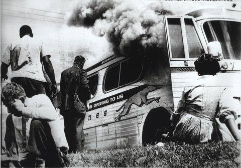
The firebombed wreckage of a Greyhound Freedom Riders bus in Anniston, Alabama, attacked by a white supremacist mob, May 1961.
Activists tested federal rulings on interstate travel:
- Reasons for the Freedom Rides: In December 1960, the Supreme Court ruled that all interstate bus stations and terminals must be integrated. In May 1961, CORE (led by James Farmer) organised the 'Freedom Rides' to test if this desegregation was happening in the Deep South. They aimed to provoke a crisis that would force the federal government to enforce the law.
- KKK Violence and the Anniston Bomb: Black and white volunteers travelled together on buses. On 14 May 1961, when one bus reached Anniston, Alabama, it was surrounded by a white mob and the KKK. The bus was firebombed, and riders were beaten with iron pipes as they tried to escape the flames. In Birmingham, Police Chief Bull Connor gave his police force the day off, allowing the KKK to freely attack the protesters again.
- Significance of the Freedom Rides: The shocking images of the burning bus in Anniston made world headlines. The violence successfully forced President John F. Kennedy to intervene. His administration pressured the Interstate Commerce Commission (ICC) to issue a strict ban on terminal segregation.
>
🎓 Scholarly Perspective: The Siege of the First Baptist Church: During the 1961 Freedom Rides, a mob of over 3,000 white segregationists besieged the First Baptist Church in Montgomery, where MLK and 1,500 activists were gathered inside. With local police refusing to act, President Kennedy was forced to declare martial law and send US Marshals to protect the building. This crisis forced Attorney General Robert F. Kennedy to finally enforce the desegregation of interstate travel.
Knowledge Check (Q3)
Which federal agency finally ordered the total desegregation of all interstate buses and terminals in late 1961?
- A. The Interstate Commerce Commission (ICC)
- B. The US Supreme Court
- C. The FBI
- D. The National Guard
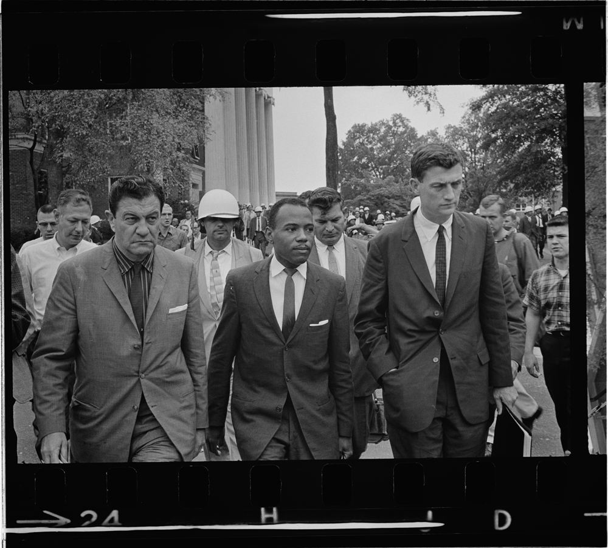
James Meredith walks on the campus of the University of Mississippi, escorted by federal marshals after deadly rioting, October 1962.
Following the Freedom Rides, civil rights activists targeted segregated universities:
- The James Meredith Case (1962): The Supreme Court ordered the segregated University of Mississippi ('Ole Miss') to accept its first black student, James Meredith. The State Governor and university officials defied the Supreme Court and physically stopped Meredith from registering.
- The Federal Response: President Kennedy sent 320 federal marshals to escort Meredith onto the campus. Their arrival sparked a massive, violent riot by a white mob of over 3,000 people. Two people were killed and hundreds were wounded.
- Significance: President Kennedy was forced to escalate his response, sending in thousands of federal troops to restore order. Meredith successfully registered and had to be guarded by troops for his entire degree. This event proved the federal government would use the military to force Southern state governors to obey civil rights laws.
>
📝 Context Focus President Kennedy's deployment of troops to 'Ole Miss' mirrored President Eisenhower's actions at Little Rock in 1957, confirming that the federal government would uphold Supreme Court decisions with military force.
Knowledge Check (Q4)
How many federal marshals and troops were deployed by President Kennedy to restore order at Ole Miss?
- A. Over 300 marshals and thousands of soldiers
- B. Only 10 police officers
- C. No federal forces were sent
- D. 50 local deputies

Birmingham police under Commissioner 'Bull' Connor unleash attack dogs on teenage civil rights demonstrators, May 1963.
Following the Freedom Rides, civil rights activists targeted segregated universities:
- The James Meredith Case (1962): The Supreme Court ordered the segregated University of Mississippi ('Ole Miss') to accept its first black student, James Meredith. The State Governor and university officials defied the Supreme Court and physically stopped Meredith from registering.
- The Federal Response: President Kennedy sent 320 federal marshals to escort Meredith onto the campus. Their arrival sparked a massive, violent riot by a white mob of over 3,000 people. Two people were killed and hundreds were wounded.
- Significance: President Kennedy was forced to escalate his response, sending in thousands of federal troops to restore order. Meredith successfully registered and had to be guarded by troops for his entire degree. This event proved the federal government would use the military to force Southern state governors to obey civil rights laws.
>
📝 Context Focus President Kennedy's deployment of troops to 'Ole Miss' mirrored President Eisenhower's actions at Little Rock in 1957, confirming that the federal government would uphold Supreme Court decisions with military force.
Knowledge Check (Q5)
What famous document did Martin Luther King Jr. write while imprisoned in Birmingham defending direct action?
- A. Letter from Birmingham Jail
- B. I Have a Dream
- C. The Southern Manifesto
- D. The Port Huron Statement
Pair & Share Activity
Q6. How can sitting quietly at a lunch counter be a powerful form of protest? Why was the police officer unable to stop them?
Active Tasks
Q7. Give two things you can infer from Source A about the dangers faced by the Freedom Riders. (4 marks)
Q8. Why were student-led sit-ins so effective in exposing the social absurdity and commercial vulnerability of segregation?
Q9. How did the Freedom Rides force the Kennedy administration to abandon its quiet behind-the-scenes diplomacy?
Historian's Corner: ⚖️ Dual Interpretation: Direct Action Protests
Q10. Which historical interpretation provides a more convincing explanation of developments in KT 2.1: How did peaceful protests (like sit-ins and Freedom Rides) force the government to act??
Source A
Source A: A photograph of the preserved Greensboro Woolworth's lunch counter and stools on display as an historical exhibit at the Smithsonian National Museum of American History.
[A photograph of the empty, preserved section of the Greensboro Woolworth's lunch counter and four stools, displayed as an exhibit in a museum to commemorate the 1960 sit-in protests.]
Source B
Source B: From a photograph showing James Meredith walking to class at the University of Mississippi, October 1962.
[A photograph of James Meredith walking down a university path. He is flanked by several tall, serious US Marshals wearing helmets and armbands. In the background, soldiers are visible guarding the building.]
Provenance Scaffolding:Scaffolding Clue: Evaluate the author, audience, and motive for both sources. For written accounts, consider if the author has political reasons to justify their actions. For photographs, consider what may be excluded outside the camera's frame.
Q11. How useful are Sources A and B for an enquiry into the tactics of direct action and the response of Southern white opposition? (8 marks)
L2: KT 2.2: How did protests in Birmingham and Selma lead to the Civil and Voting Rights Acts?[[SRC_MARKER:L5_Start]]
Learning Objectives
Demonstrate comprehensive historical knowledge of the key developments and figures in KT 2.2: How did protests in Birmingham and Selma lead to the Civil and Voting Rights Acts?.
Analyse conflicting motivations, tactics, and responses of groups and individuals involved in the crisis.
Evaluate competing historical interpretations and source evidence to construct reasoned causal judgments for Paper 3.
Recall & Retrieval
1. What was the purpose of the Greensboro sit-ins in 1960?
2. What was the goal of the Freedom Rides in 1961?
3. How did the KKK react to the Freedom Riders in Anniston?
4. Which laws enforced racial segregation and discrimination in the Southern states in the 1950s?
5. What does the abbreviation NAACP stand for?
Vocabulary Check
The Golden Sentence: Choose TWO terms from the word bank. Write ONE grammatically sophisticated, historically accurate sentence connecting them using a causal conjunction (because, although, or consequently):
Eugene 'Bull' Connor | Edmund Pettus Bridge | 1964 | 1965 | Bull Connor
Teacher Model / Pupil Sentence: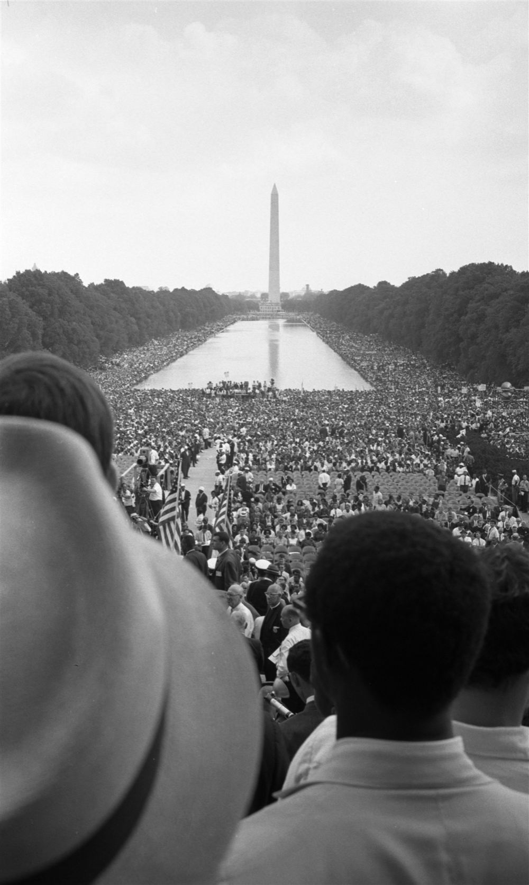
Over 250,000 civil rights demonstrators gather at the Lincoln Memorial during the historic March on Washington, August 1963.
In April 1963, the SCLC launched 'Project C' (Confrontation) in Birmingham, knowing the hot-headed police chief, Eugene 'Bull' Connor, would overreact to peaceful protests:
- The Birmingham Campaign: When MLK was jailed (writing his famous 'Letter from a Birmingham Jail'), the movement controversially used children to march; Connor unleashed attack dogs and high-pressure fire hoses on the students.
- The March on Washington (28 August 1963): To capitalise on the resulting national outrage and pressure Congress to pass a civil rights bill, 250,000 people (including 75,000 white Americans) gathered for the March on Washington, demanding 'Jobs and Freedom'. The peaceful, globally televised event was highlighted by Martin Luther King Jr.'s iconic 'I have a dream' speech.
- So What? The horrifying violence in Birmingham forced the President to finally propose sweeping civil rights legislation, while the monumental scale of the Washington march demonstrated unstoppable, unified national support for equality.
>
🎓 Scholarly Perspective: Bull Connor as a Strategic Target: Civil rights historians point out that SCLC chose Birmingham precisely because they knew
Bull Connor would react with public brutality. Without Connor's violent reaction, the campaign would not have captured national television coverage, proving that the media was a key target of the protests.
> 🎙️
Eyewitness Testimony — Sheyann Webb-Christburg: “All I could see was a sea of blue state troopers. Suddenly, they charged. I saw horses, and I heard people screaming. Tear gas filled the air, and it burned my eyes. People were being beaten with nightsticks, falling all around me. I turned and ran for my life. A young white minister, Hosea Williams, grabbed my hand and helped me run. I thought I was going to die. When I got home, I was shaking, but I told my mother, 'I'm still going to march until we get our freedom.'”
Context: Recalling her experience as an 8-year-old participant in the 'Bloody Sunday' march in Selma, Alabama on March 7, 1965.💬
Reflective Question: Given the extreme danger, why do you think civil rights leaders allowed children to march? How did the public reaction to this violence change federal policy?
Knowledge Check (Q1)
Where did Martin Luther King Jr. deliver his iconic 'I Have a Dream' speech during the 1963 march?
- A. The Lincoln Memorial
- B. The White House lawn
- C. The US Capitol steps
- D. The Washington Monument
Think-Pair-Share: Q2 Why did the SCLC choose to use children in the Birmingham protests (the 'Children's Crusade')?
| 1. My Thoughts (Think) |
2. Partner's Thoughts (Pair) |
|
|
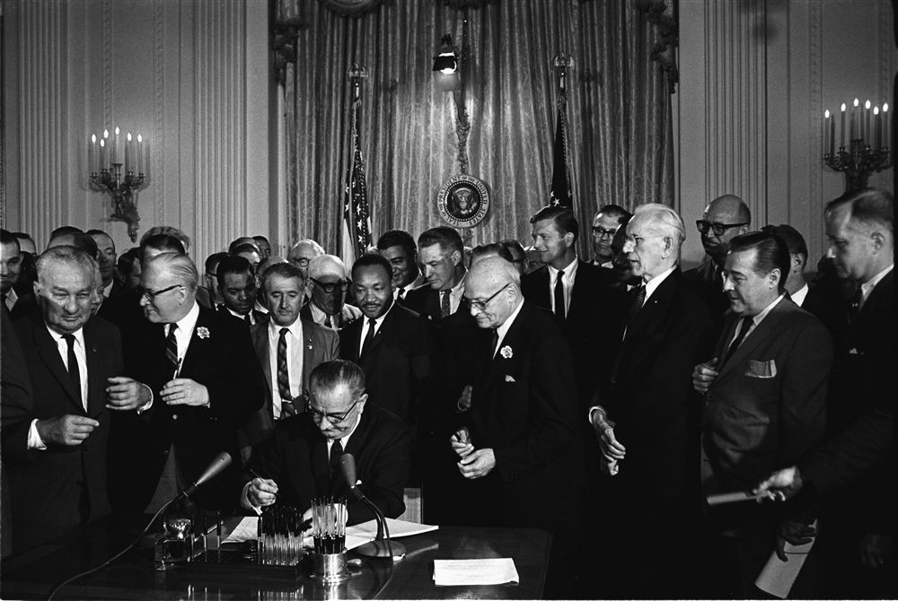
President Lyndon B. Johnson shakes hands with Martin Luther King Jr. after signing the landmark Civil Rights Act of 1964.
In 1964, SNCC and CORE targeted Mississippi (where only 7% of eligible Black voters were registered) for a massive voter registration drive known as Freedom Summer:
- Voter Registration Drive: Thousands of mostly white Northern college student volunteers arrived to help and set up Freedom Schools, facing severe violence and church bombings from the Ku Klux Klan.
- The Mississippi Murders (June 1964): Three civil rights workers—James Chaney (Black), Andrew Goodman (white), and Michael Schwerner (white)—were abducted and murdered by the KKK with the help of local police.
- So What? While the campaign only successfully registered 1,600 new voters due to extreme intimidation, the horrific murders became a national scandal that highlighted the deadly reality of voter suppression and pushed some activists to question non-violence.
>
🎓 Scholarly Perspective: Media and the Mississippi Murders: Historians note that the murder of Chaney, Goodman, and Schwerner received massive national coverage because two of the victims were white Northern college students. This exposed a bitter reality: the media and federal government paid far more attention to civil rights violence when it affected white citizens.
Knowledge Check (Q3)
What major event in summer 1964 focused on registering Black voters in Mississippi and saw the murder of three activists?
- A. Freedom Summer
- B. The Freedom Rides
- C. The Montgomery Boycott
- D. The Poor People's Campaign
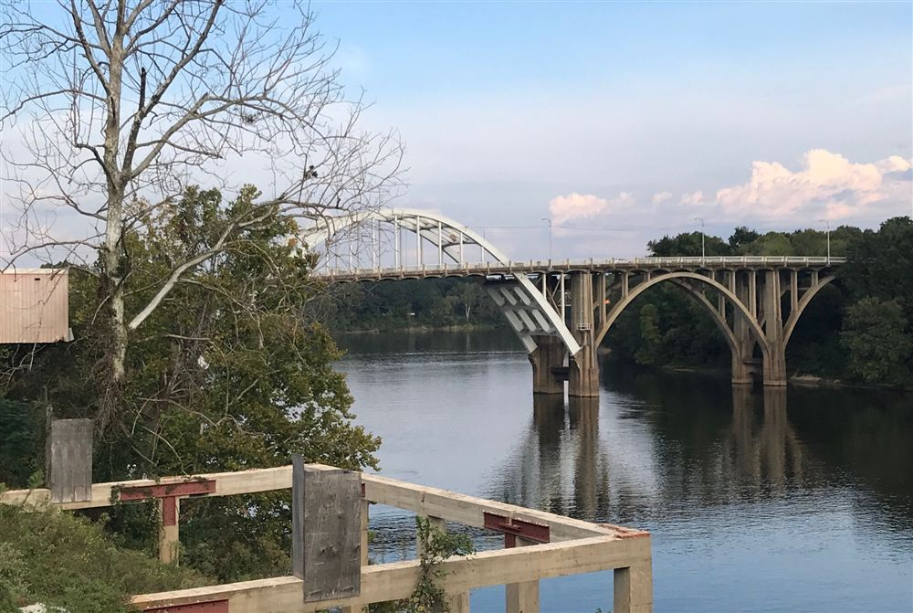
Alabama State Troopers violently charge peaceful voting rights marchers on the Edmund Pettus Bridge on 'Bloody Sunday', March 7, 1965.
By 1965, the civil rights movement reached its dramatic peak through highly publicised, peaceful direct action targeting racist authorities:
- The Campaign in Selma (1965): In 1965, King and the SCLC organised a voting rights campaign in Selma, Alabama, where only 383 out of 15,000 eligible Black citizens were registered. On 7 March 1965, 600 marchers attempting to walk to Montgomery were brutally attacked by state troopers with tear gas and clubs on the Edmund Pettus Bridge, an event dubbed 'Bloody Sunday'.
- The Role of Presidents Kennedy & Johnson: President John F. Kennedy had appointed Black federal judges and sent troops to Ole Miss, but only firmly committed to a Civil Rights Bill after the Birmingham crisis forced his hand in 1963. Following JFK's assassination, President Lyndon B. Johnson masterfully used his Southern background and the nation's grief to push the Civil Rights Act of 1964 through Congress, legally banning segregation in public places and employment. Following the outrage over Selma, LBJ urgently introduced and passed the Voting Rights Act of 1965, which banned discriminatory literacy tests and sent federal officials to the South to enforce registration.
- So What? The shocking television footage of 'Bloody Sunday' provided the immediate catalyst for President Johnson to demand that Congress urgently pass federal voting rights legislation. Kennedy provided the initial legislative blueprint, but it was Johnson's unparalleled political skill that ultimately dismantled the legal pillars of white supremacy and fundamentally transformed the US political landscape.
📝 Revision Task: Competing Narratives Controversy
To check your understanding of the debate, write a short response in your study notes comparing these narratives:
- 'Top-Down' Narrative: Focuses on presidential power; it argues that without President Johnson's ruthless political genius, his ability to break Dixiecrat filibusters, and his genuine commitment to a 'Great Society', the bills would never have become law.
- 'Bottom-Up' Grassroots Narrative: Argues that the Presidents were actually reluctant and overly cautious; it insists that legislation was only achieved because brave activists deliberately provoked crises in Birmingham and Selma, shedding their own blood to force a hesitant government into action.
>
🎓 Scholarly Perspective: Johnson and King's Collaboration: While historians emphasize the pressure of Bloody Sunday, they also note the collaborative relationship between President Johnson and Dr. King. Johnson used the public shock of Selma to draft and pass the Voting Rights Act, showcasing a successful convergence of grassroots pressure and executive power.
Knowledge Check (Q4)
Which discriminatory voting obstacles did the Voting Rights Act of 1965 immediately abolish nationwide?
- A. Literacy tests and arbitrary disqualifications
- B. Candidate filing fees
- C. Party primary elections
- D. Paper ballots
Pair & Share Activity
Q5. Given the extreme danger, why do you think civil rights leaders allowed children to march? How did the public reaction to this violence change federal policy?
Active Tasks
Q6. Explain why civil rights legislation was passed in the years 1964–65. (12 marks)
Q7. Why did the SCLC choose to use children in the Birmingham protests (the 'Children's Crusade')?
Q8. How did the Selma campaign directly contribute to the passage of the Voting Rights Act of 1965?
Historian's Corner: ⚖️ Dual Interpretation: The Birmingham & Selma Campaigns
Q9. Which historical interpretation provides a more convincing explanation of developments in KT 2.2: How did protests in Birmingham and Selma lead to the Civil and Voting Rights Acts??
Source A
Source A: From a photograph of Martin Luther King Jr. addressing the March on Washington from the Lincoln Memorial, 28 August 1963.
[A photograph taken from behind Dr. King, showing him looking out over a massive crowd of over 250,000 demonstrators surrounding the reflecting pool in Washington D.C. Large banners and US flags are visible.]
Source B
Source B: From a photograph showing President Johnson signing the Voting Rights Act into law, 6 August 1965.
[A photograph showing President Lyndon B. Johnson sitting at a desk, handing a commemorative pen to Martin Luther King Jr. and other civil rights leaders who are gathered around him smiling.]
Provenance Scaffolding:Scaffolding Clue: Evaluate the author, audience, and motive for both sources. For written accounts, consider if the author has political reasons to justify their actions. For photographs, consider what may be excluded outside the camera's frame.
Q10. How useful are Sources A and B for an enquiry into the impact of non-violent campaigns on federal civil rights legislation in the 1960s? (8 marks)
L3: KT 2.3: What was the Black Power movement, and how did it differ from non-violent protests?[[SRC_MARKER:L6_Start]]
Learning Objectives
Demonstrate comprehensive historical knowledge of the key developments and figures in KT 2.3: What was the Black Power movement, and how did it differ from non-violent protests?.
Analyse conflicting motivations, tactics, and responses of groups and individuals involved in the crisis.
Evaluate competing historical interpretations and source evidence to construct reasoned causal judgments for Paper 3.
Recall & Retrieval
1. What was 'Project C' in Birmingham designed to achieve?
2. Why was the media footage of Bull Connor's police violence important?
3. What did the Civil Rights Act of 1964 outlaw?
4. Which laws enforced racial segregation and discrimination in the Southern states in the 1950s?
5. What does the abbreviation NAACP stand for?
Vocabulary Check
Conceptual Classification: Categorise the terms from the word bank into the two historical boxes below:
Huey Newton and Bobby Seale | Stokely Carmichael | Stokely Carmichael | Huey Newton and Bobby Seale | Nation of Islam
Power, Governance & Warfare
Economy, Trade & Society
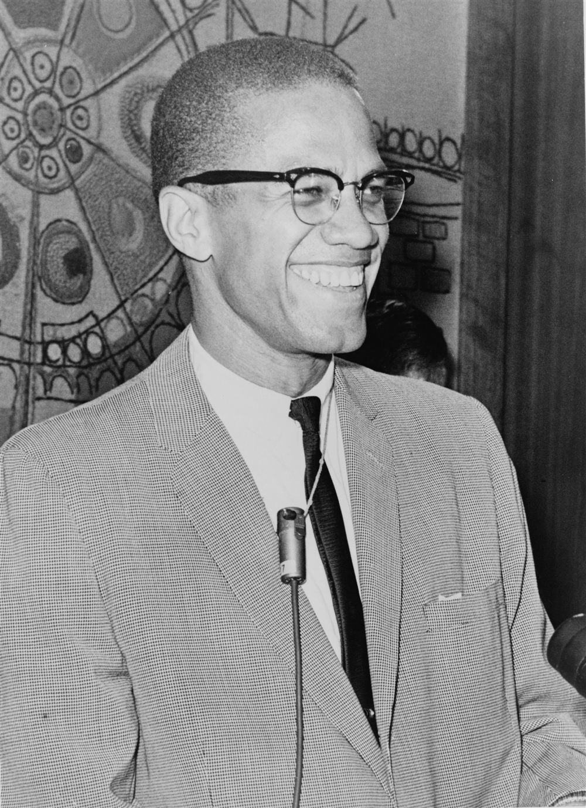
Malcolm X delivers a speech condemning non-violence as defenseless in the face of white supremacist terror, 1964.
In the early 1960s, Malcolm X offered a powerful militant alternative to the mainstream civil rights movement:
- Beliefs and Methods (Pre-1964): Malcolm X was a brilliant public speaker and the leading figure of the Nation of Islam (NOI), led by Elijah Muhammad. Unlike MLK, Malcolm initially completely rejected integration. He believed that white society was inherently racist, that Black Americans needed to create their own separate nation, and that they should rely entirely on themselves.
- Self-Defence: He famously rejected MLK's non-violent methods, calling them the "philosophy of the fool", and believed Black Americans had the right to defend themselves against white violence "by any means necessary". He heavily criticised the 1963 March on Washington, calling it a "farce" run by white people.
- Change of Attitude: In 1964, Malcolm X left the Nation of Islam and went on a religious pilgrimage to Mecca. Seeing Muslims of all different races interacting as equals profoundly changed his views. He began to believe that racial integration might be possible and softened his stance, becoming more willing to work with white people and mainstream civil rights groups.
- Assassination (1965): The Nation of Islam was furious at his change in beliefs and departure. On 21 February 1965, Malcolm X was shot dead by three NOI members while giving a speech in New York. However, his earlier ideas of Black pride and self-defence lived on to inspire the next generation.
>
🎓 Scholarly Perspective: The North/South Divide: Historians argue that
Malcolm X's appeal was rooted in Northern cities. While MLK's Southern campaigns targeted legal segregation, Northern Blacks faced economic discrimination and police brutality that legal rulings did not fix. Malcolm's militant rhetoric resonated with urban youth who felt non-violence had failed them.
> 🎙️
Eyewitness Testimony — Kathleen Cleaver: “For years, we were taught to hate ourselves. We were told our hair was too nappy, our skin too dark, our culture non-existent. Black Power means we define ourselves. We are proud of our African heritage. We wear our hair in Afros, and we do not beg white people for integration. We demand control of our own communities—our schools, our housing, our police. And if the police attack us, we have a constitutional right to defend ourselves. That is not hate; that is self-preservation.”
Context: Communications Secretary for the Black Panther Party, interviewed in 1968 about the philosophy of Black Power and self-defense.💬
Reflective Question: How did the Black Power philosophy shift the goal of the movement from 'integration' to 'self-determination'? What were the potential benefits and risks of this new approach?
Knowledge Check (Q1)
What was Malcolm X's famous phrase regarding the right of Black Americans to defend themselves?
- A. 'By any means necessary'
- B. 'Turn the other cheek'
- C. 'We shall overcome'
- D. 'Non-violence is supreme'
Think-Pair-Share: Q2 How did Malcolm X's critique of integration appeal to Black Americans living in Northern urban ghettos?
| 1. My Thoughts (Think) |
2. Partner's Thoughts (Pair) |
|
|

Tommie Smith and John Carlos give the Black Power raised-fist salute on the Olympic medal podium in Mexico City, October 1968.
By 1966, a shift occurred in the civil rights movement, giving rise to radical new leaders and methods:
- Reasons for the Emergence: The Civil Rights Acts had ended legal segregation, but did nothing to solve the severe poverty, poor housing, and unemployment in Northern city ghettos. Younger activists felt peaceful protests were too slow and left them defenceless against police brutality, while Malcolm X's influence provided an appealing alternative.
- Stokely Carmichael: In 1966, Stokely Carmichael became the leader of SNCC. Having grown tired of peaceful protests, he pushed white members out of the group and popularised the slogan "Black Power". This urged Black Americans to reject white help, take control of their own communities, and celebrate their African heritage (using the slogan "Black is beautiful", wearing traditional clothing and natural afros).
- The 1968 Mexico Olympics: The Black Power movement gained massive worldwide publicity. When American gold and bronze medalists Tommie Smith and John Carlos stood on the podium during the US national anthem, they raised their fists in the Black Power salute (wearing black gloves). They also wore no shoes to protest Black poverty. They were sent home in disgrace and received death threats, but successfully brought global attention to the struggle for racial equality.
>
🎓 Scholarly Perspective: Stokely Carmichael's Transformation: Historians point to the 1966 Meredith March Against Fear as a turning point. After
James Meredith was shot, Carmichael and King marched together, but Carmichael's frustration boiled over, leading him to declare that Black people had been begging for rights for years. His call for 'Black Power' signaled a final break with the SCLC's non-violent integrationist goals.
Knowledge Check (Q3)
Who first popularized the phrase 'Black Power' during the March Against Fear in Mississippi in 1966?
- A. Stokely Carmichael
- B. Martin Luther King Jr.
- C. James Meredith
- D. Huey Newton
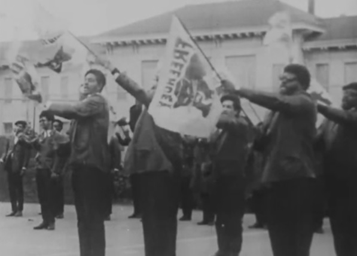
Armed members of the Black Panther Party for Self-Defense march in Oakland, California, demanding an end to police brutality.
Founded by Huey Newton and Bobby Seale in California in October 1966, the Black Panther Party was the most militant and radical Black Power group:
- Militant Methods: The Panthers completely rejected peaceful protest. They wore a distinct uniform of black leather jackets and black berets, trained members in weapons, and engaged in armed patrols of the streets to observe the police and protect Black citizens from police brutality. This frequently led to violent and deadly shootouts with authorities.
- Ten-Point Programme: They published a 'Ten-Point Programme' demanding full employment, decent housing, education, and an immediate end to police brutality.
- Welfare Achievements: Despite constant harassment by the FBI, they ran highly successful community 'Survival Programs' in ghettos. The most famous was the 'Free Breakfast for Children' program, which fed up to 10,000 poor children a day. They also set up free health clinics, provided clothing, and ran classes teaching Black history and pride.
📝 Revision Task
To check your understanding of this topic, complete the following in your study notes:
- Write a short comparison (2-3 sentences) explaining the difference in methods between Martin Luther King Jr. and the Black Panthers.
- List two reasons why Stokely Carmichael and others felt the "Black Power" movement was necessary by 1966.
>
📝 Ideology Focus Be prepared to explain why the movement split. Make sure to link the slow progress in Northern ghettos to the rise of Black Power.
>
🎓 Scholarly Perspective: COINTELPRO and the Black Panthers: The rapid decline of the Black Panthers was accelerated by the FBI's Counterintelligence Program (COINTELPRO). Under J. Edgar Hoover, the FBI infiltrated the Panthers, sowed internal paranoia, and coordinated with local police to launch armed raids on Panther headquarters, leading to the killing of leaders like Fred Hampton in Chicago in 1969. Hoover declared the Panthers' free breakfast program the 'greatest threat to internal security' because it built deep community loyalty.
Knowledge Check (Q4)
What community social program run by the Black Panthers provided meals to thousands of schoolchildren daily?
- A. Free Breakfast for Children Program
- B. Youth Military Corps
- C. The Freedom School Bus
- D. Panther Lunch Club
Pair & Share Activity
Q5. How did the Black Power philosophy shift the goal of the movement from 'integration' to 'self-determination'? What were the potential benefits and risks of this new approach?
Active Tasks
Q6. How useful are Sources B and C for an enquiry into the aims of the Black Panther Party? (8 marks)
Q7. How did Malcolm X's critique of integration appeal to Black Americans living in Northern urban ghettos?
Q8. What did the Black Panthers' focus on armed patrols and community breakfasts reveal about their concept of 'Black Power'?
Historian's Corner: ⚖️ Dual Interpretation: Malcolm X & Black Power
Q9. Which historical interpretation provides a more convincing explanation of developments in KT 2.3: What was the Black Power movement, and how did it differ from non-violent protests??
Source A
Source A: A photograph of Malcolm X holding a newspaper showing a headline about self-defense, 1964.
[A photograph of Malcolm X pointing to a newspaper headline that reads: 'Blacks Must Defend Themselves Against Klan Terror!'. He has a serious expression, emphasizing self-reliance.]
Source B
Source B: From a photograph showing members of the Black Panther Party marching in uniform, Oakland, California, 1968.
[A photograph showing a column of Black Panther members wearing black leather jackets, black berets, and sunglasses marching in formation. They are holding banners demanding community control and self-defense.]
Provenance Scaffolding:Scaffolding Clue: Evaluate the author, audience, and motive for both sources. For written accounts, consider if the author has political reasons to justify their actions. For photographs, consider what may be excluded outside the camera's frame.
Q10. How useful are Sources A and B for an enquiry into the shift from non-violence to Black nationalism and self-defense in the mid-1960s? (8 marks)
L4: KT 2.4: Why did riots break out in American cities between 1965 and 1968?[[SRC_MARKER:L7_Start]]
Learning Objectives
Demonstrate comprehensive historical knowledge of the key developments and figures in KT 2.4: Why did riots break out in American cities between 1965 and 1968?.
Analyse conflicting motivations, tactics, and responses of groups and individuals involved in the crisis.
Evaluate competing historical interpretations and source evidence to construct reasoned causal judgments for Paper 3.
Recall & Retrieval
1. Why did Malcolm X reject Martin Luther King's non-violent approach?
2. What did the slogan 'Black Power' mean to Stokely Carmichael?
3. What were the militant methods of the Black Panther Party?
4. Which laws enforced racial segregation and discrimination in the Southern states in the 1950s?
5. What does the abbreviation NAACP stand for?
Vocabulary Check
Spot the Deliberate Error: Read the statement below. One historical fact or vocabulary concept has been deliberately falsified. Underline the error and explain the accurate historical reality below:
The Kerner Commission Report | Memphis, Tennessee | Memphis | Kerner Commission | Watts Riots
Challenge: Write ONE statement containing a deliberate historical misconception using The Kerner Commission Report or Memphis, Tennessee. Identify and correct the error:
Teacher Model / Historical Correction: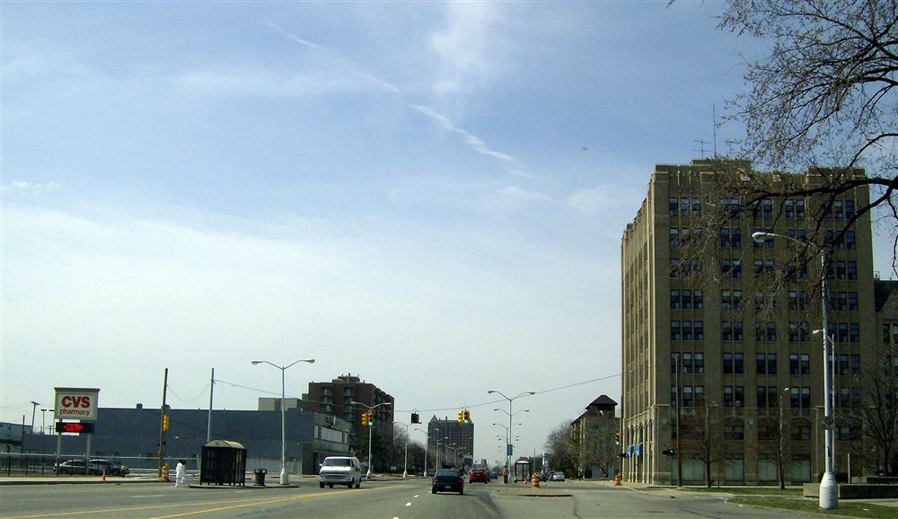
National Guardsmen patrol burning streets in Detroit during the July 1967 rebellion, which left 43 people dead.
Between 1964 and 1968, massive frustration in Northern and Western city ghettos erupted into over 300 major riots. The intense summer heat often made overcrowded ghetto conditions worse and tempers short:
- Causes: The riots were primarily driven by high unemployment, terrible housing, and deep-seated poverty, but they were usually sparked by a specific incident of police brutality against a young Black man.
- Key Riots: In August 1965, a major riot broke out in the Watts neighborhood of Los Angeles after a Black motorist was violently arrested, resulting in 34 deaths and millions of dollars in damage. In 1967, violence peaked with riots in over 125 cities, including devastating unrest in Detroit that left over 40 dead and 7,000 arrested.
- The Kerner Report (1968): President Johnson set up an enquiry to investigate the causes of these riots, led by Otto Kerner. The 1968 report shockingly concluded that the riots were caused by white racism, police bias, and poverty, famously stating that the USA was becoming "two societies, one black, one white—separate and unequal".
- So What? The report recommended sweeping government spending to improve ghetto housing and employment, but these suggestions were largely ignored as the government diverted its funds to the escalating Vietnam War.
>
🎓 Scholarly Perspective: The McCone Commission Findings: Following the 1965 Watts riots, the McCone Commission investigated the causes of the unrest. While conservative politicians blamed outside agitators and criminals, the commission concluded that the riots were a protest against systemic socioeconomic conditions: a lack of jobs, substandard housing, inadequate schooling, and widespread resentment of police brutality in the ghetto.
> 🎙️
Eyewitness Testimony — Watts Resident: “People call this a riot. We call it an uprising. We aren't just destroying things; we are crying out. We've got no jobs, the police beat us up every day, and we live in rundown tenements where the rent is sky-high. The civil rights laws in Washington didn't change anything for us in Watts. We still can't feed our kids. If we have to burn down these white-owned stores that cheat us every day just to make the country look at us, then that's what we will do.”
Context: An anonymous resident of Watts, Los Angeles, interviewed during the Watts Uprising in August 1965.💬
Reflective Question: According to this resident, why did federal laws like the Civil Rights Act fail to prevent urban riots? What does this tell us about the limits of legal rights when economic misery remains?
Knowledge Check (Q1)
What 1968 presidential report blamed urban riots on systemic white racism and economic deprivation?
- A. The Kerner Commission Report
- B. The Warren Report
- C. The Southern Manifesto
- D. The Moynihan Report
Think-Pair-Share: Q2 Why did the Kerner Commission conclude that America was moving toward 'two societies, one black, one white—separate and unequal'?
| 1. My Thoughts (Think) |
2. Partner's Thoughts (Pair) |
|
|
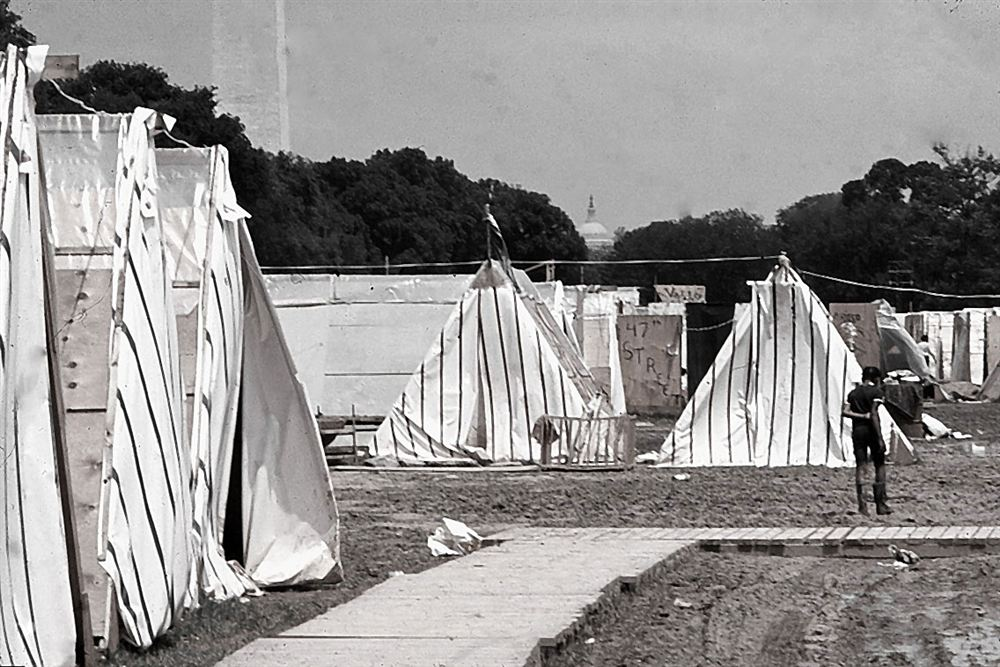
Demonstrators camp at 'Resurrection City' in Washington D.C. as part of the Poor People's Campaign initiated by MLK.
Following the Watts riots, Martin Luther King Jr. realised that eradicating slums and securing jobs was much harder than integrating lunch counters. He moved his focus North to tackle 'de facto' (in practice) segregation and economic inequality:
- The Chicago Freedom Movement: In January 1966, King launched the Chicago Freedom Movement. Alongside activists like Jesse Jackson (who ran 'Operation Breadbasket' to boycott white businesses that refused to hire Black workers), King organised marches to protest segregated housing.
- Why it Failed — Northern Racism: King faced white mobs in Chicago that he described as even more hateful and violent than those in the South.
- Why it Failed — Lack of Support: Many of Chicago's Black politicians opposed King's interference, and his non-violent methods failed to connect with frustrated ghetto gangs who were increasingly drawn to Black Power.
- Why it Failed — Broken Promises: The city’s Mayor, Richard Daley, made promises to improve housing just to get King to leave, but completely ignored these agreements once the campaign ended.
>
🎓 Scholarly Perspective: The Challenge of De Facto Segregation: Historians emphasize that the Chicago campaign exposed the limits of Southern civil rights strategies. In the North, segregation was maintained not by state laws (de jure) but by private real estate practices, bank redlining, and systemic job discrimination (de facto). Overcoming these economic structures required radical resource redistribution, which met fierce resistance from white Northern voters and politicians.
Knowledge Check (Q3)
In which Northern city did Martin Luther King launch his 1966 campaign against housing segregation and slum landlords?
- A. Chicago
- B. New York
- C. Detroit
- D. Boston
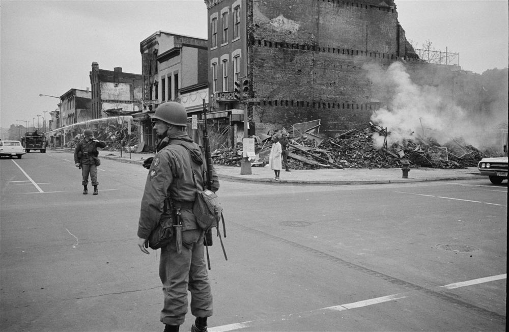
Over 100,000 mourners follow the mule-drawn carriage carrying Martin Luther King Jr.’s casket through Atlanta, April 1968.
On 4 April 1968, Martin Luther King Jr. was shot and killed by a white racist named James Earl Ray while standing on the balcony of the Lorraine Motel in Memphis, Tennessee. He was there to support a strike by poorly paid Black sanitation workers:
- Massive Rioting: His murder sparked immediate, nationwide grief and rage. Violent riots broke out in over 100 cities; 46 people died, over 21,000 were arrested, and nearly $70 million in property was damaged.
- Radicalisation: Many Black Americans felt that the assassination proved peaceful protest was useless. Civil rights groups became more militant; for example, SNCC changed its name from 'Non-violent' to 'National' and pushed out its white members.
- The 1968 Civil Rights Act: In the aftermath of his death, Congress quickly passed the Civil Rights Act of 1968 (also known as the Fair Housing Act), which made it illegal to discriminate based on race when selling or renting housing.
>
🎓 Scholarly Perspective: King's Radicalization: In his final years, King became increasingly radical. He opposed the Vietnam War and launched the Poor People's Campaign, arguing that integration was meaningless without economic justice. Historians argue that his assassination cut short a movement that was shifting from civil rights to human rights.
Knowledge Check (Q4)
Where was Martin Luther King Jr. standing when he was fatally shot on April 4, 1968?
- A. On the balcony of the Lorraine Motel in Memphis
- B. At the Lincoln Memorial in Washington
- C. In Ebenezer Baptist Church in Atlanta
- D. On the Edmund Pettus Bridge in Selma
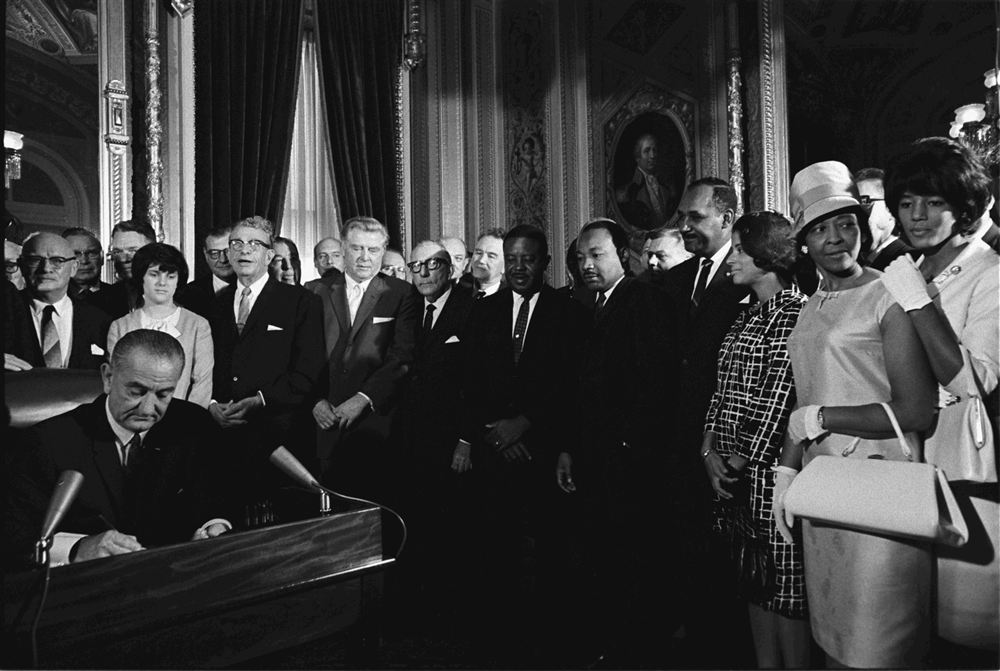
President Johnson signs the Voting Rights Act of 1965, dramatically increasing Black voter registration and elected officials across the South by 1975.
By 1975, the civil rights movement had transformed America, but significant inequalities remained:
- Successes and Progress — Political Power: The Voting Rights Act was highly successful. By 1970, 10.9% of all elected officials were Black, and thousands of Black representatives were elected across the South. Shirley Chisholm made history as the first Black woman elected to Congress.
- Successes and Progress — Education: Desegregation in schools vastly improved. By 1974, only 8% of Southern Black children remained in fully segregated schools, aided by 'bussing' children to mixed schools.
- Successes and Progress — Affirmative Action: To correct past injustices, 'affirmative action' policies were introduced, deliberately giving preference to minority groups in jobs and education.
- Limitations — Economic Inequality: While legal rights were secure, the economic gap remained huge. Black Americans were still paid significantly less than white Americans on average, and poverty rates stayed high.
- Limitations — Ghettos and Police: Many Black Americans remained trapped in poor inner-city ghettos and continued to face regular harassment from the police.
- Limitations — Lack of Presidential Support: By 1969, Richard Nixon was President. He showed very little sympathy for the civil rights movement, refused to meet with Black leaders, and dealt harshly with groups like the Black Panthers.
📝 Revision Task
To check your understanding of this topic, complete the following in your study notes:
- Write down the main conclusion of the 1968 Kerner Report in one sentence.
- List two reasons why Martin Luther King's 1966 Chicago campaign was ultimately unsuccessful.
>
🎓 Scholarly Perspective: Evaluating Progress by 1975: Historians evaluate the civil rights movement up to 1975 as a divided success. While it succeeded in dismantling Jim Crow (de jure segregation) and securing voting rights, it failed to resolve systemic economic inequality, poverty, and de facto housing segregation in urban centers.
Knowledge Check (Q5)
What landmark 1968 federal law prohibited racial discrimination in the sale, rental, and financing of housing?
- A. The Fair Housing Act (Civil Rights Act of 1968)
- B. The Voting Rights Act
- C. The 14th Amendment
- D. The Economic Opportunity Act
Pair & Share Activity
Q6. According to this resident, why did federal laws like the Civil Rights Act fail to prevent urban riots? What does this tell us about the limits of legal rights when economic misery remains?
Active Tasks
Q7. Why did the Kerner Commission conclude that America was moving toward 'two societies, one black, one white—separate and unequal'?
Q8. How did the assassination of MLK in 1968 mark a turning point for the civil rights movement?
Historian's Corner: ⚖️ Dual Interpretation: Urban Riots and the Kerner Report
Q9. Which historical interpretation provides a more convincing explanation of developments in KT 2.4: Why did riots break out in American cities between 1965 and 1968??
Q10. Explain why violent riots broke out in American cities between 1965 and 1968. (12 marks)
You may use the following in your answer:
- The Watts Riot (1965)
- The Kerner Commission Report (1968)
You must also use information of your own.
Generated: 2026-09-16 23:10:25 UTC | Unit: usa